ВСЕПОРОДНАЯ ВЫСТАВКА РАНГА ЧЕМПИОН ФЕДЕРАЦИИ
ЦЛЖ "ЛИДЕР И ПРЕСТИЖ"
5 АВГУСТА 2012 ГОДА
Сокольники, 3-й Лучевой Просек
ЭКСПЕРТЫ:
ПРОЗОРОВ Д. (Москва),
БРОВКИНА Т. (Москва)
ЕГОРОВА Т. (Москва)
Количество собак - 337
ФОТООТЧЕТ С БЕСТОВ
BEST in SHOW (эксп. Прозоров)
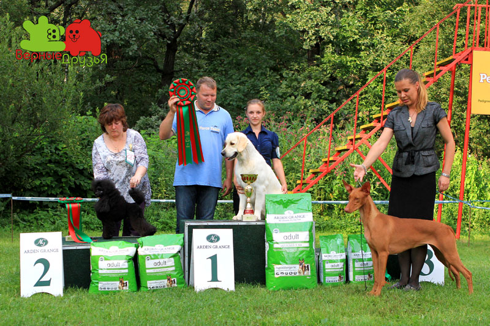
1 место: золотистый ретривер, RIERA SANTA SEVERINA, вл. Чебурей А.
2 место: пудель той, GIULFO TRUE BLOOD-N, вл. Горшкова Е.
3 место: фараонова собака, РИДЛИ РОАД ИЛЛЮМИНЕЙТЕД, Евтеева М.
1 ГРУППА (эксп. Егорова)
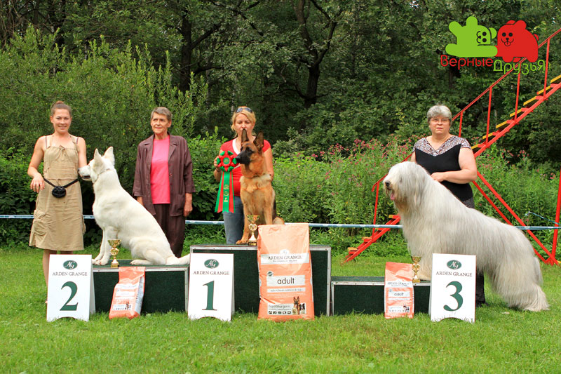
1 место: немецкая овчарка, WENDY DI CASA BEGGIATO
2 место: белая швейцарская овчарка, DAINA MOON SIBERIAN PRIDE, вл. Царегородцева М.
3 место: южноруская овчарка, PARAMON CRIMEA AK-KAYA, вл. Наумовы
2 ГРУППА (эксп. Прозоров)
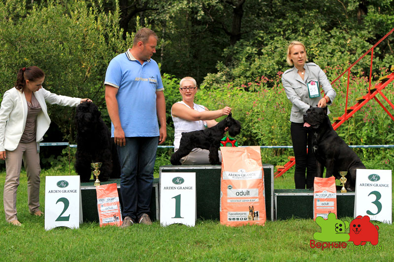
1 место: цвергшнауцер, ,
2 место: русский черный терьер, SPARK GALA`S VERONA, вл. Артамонов В.
3 место: итальянский кане-корсо, ЕРИКА ИЗ ЗОЛОТОГО ВЕНЦА, вл. Горбачева В.
3 ГРУППА (эксп. Егорова)
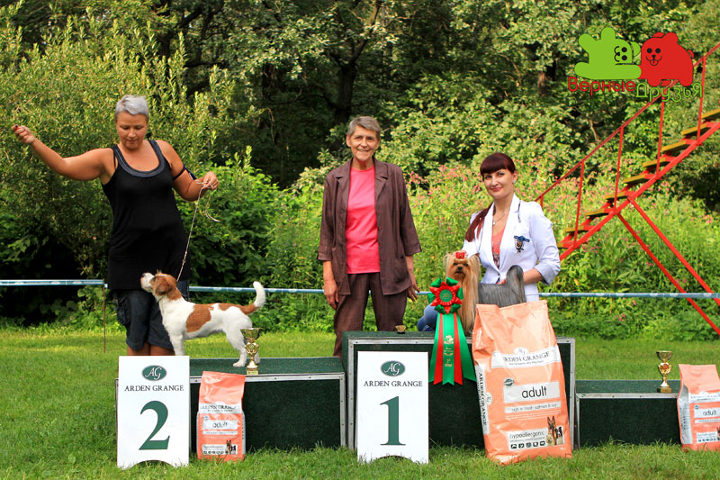
1 место: йоркширский терьер, VILAINS DE PARI OSKAR, вл. Митуля Л.
2 место: джек расел терьер, MOYA BRITANIYA PRIMA STELLA DEL MARE, вл. Попков, Макарова
4 ГРУППА (эксп. Бровкина)
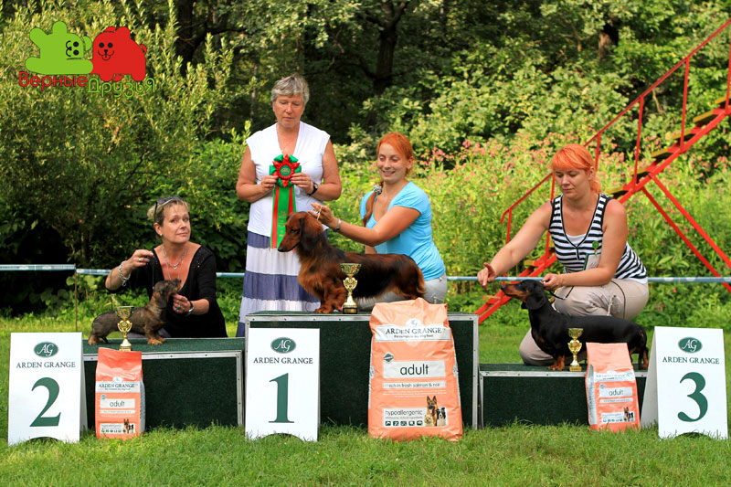
1 место: такса д/ш, EXCELLMAGIC L`ENIGMA EXCLUSIVE, вл. Белова
2 место: такса кроличья ж/ш, БЭБИ БУСИНКА, вл. Котикова О.
3 место: такса г/ш, IMPERIA MOKKO BAGIRA, вл. Лысакова М.
5 ГРУППА (эксп. Егорова)
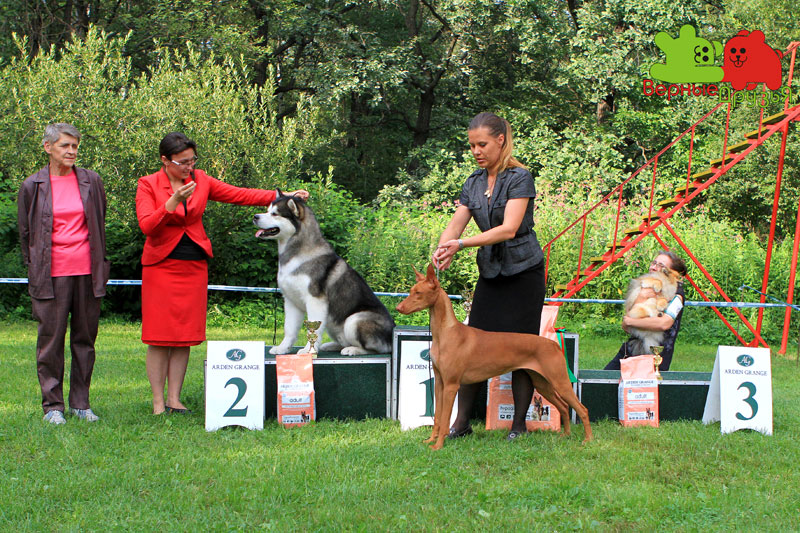
1 место:фараонова собака, РИДЛИ РОАД ИЛЛЮМИНЕЙТЕД, вл. Евтеева М.
2 место: аляскинский маламут, KAVIAKS "THE COLONEL" AT WOLF MOUNTAIN, вл. Гончарова, Jenkins
3 место: немецкий шпиц малый, ВСЕСЛАВ ИЗ ЛАСТОЧКИНОГО ГНЕЗДА, вл. Ласточкина С.
6 ГРУППА (эксп.Прозоров)
1 место: бигль, VALSI INVITE TO DANCE, вл. Крылова А.
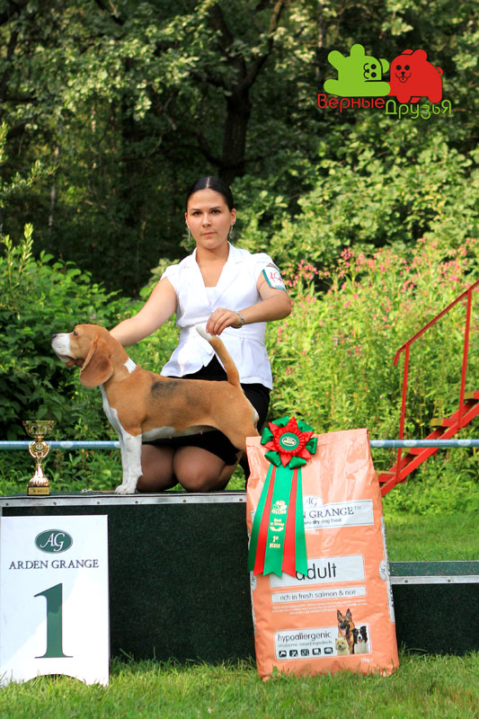
2 место: родезийский риджбек, ARESVUMA TSEFNI JAMALI, вл. Сахарова Н.
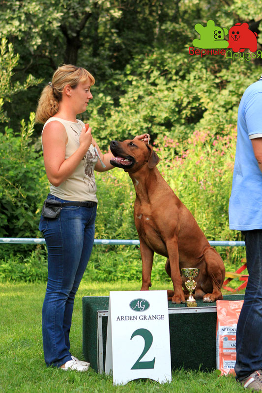
7 ГРУППА (эксп.Егорова)
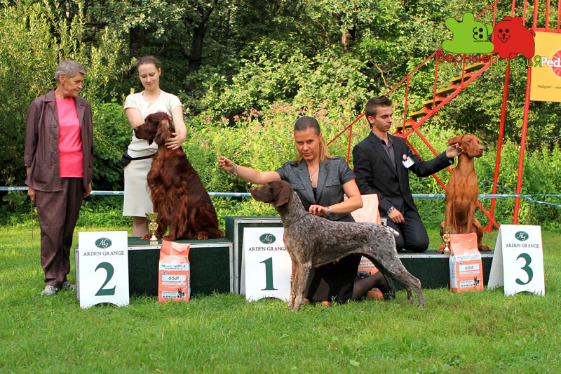
1 место: курцхаар, STAR K`S MILE HI CHARLOTTE, вл. Linda&Richard Stak
2 место: ирландский сеттер, REDGRACE FOREST KNIGHT, вл.Рябых
3 место: венгерская короткошерстная легавая, ТИНА ТРЕЙДИНГ ЭЛИОТ, вл. Шелестина Н.
8 ГРУППА (эксп. Прозоров)
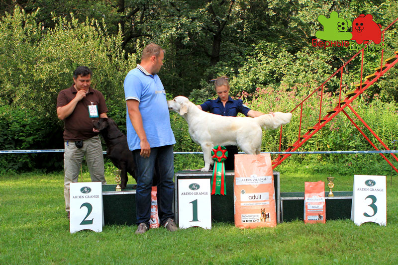
1 место: золотистый ретривер, RIERA SANTA SEVERINA, вл. Чебурей А.
2 место: лабрадор ретривер, STRONG STAEL FANTASTIC BRIGHT FLAME, вл. Демидова Ю.
1 место: пудель той, GIULFO TRUE BLOOD-N, вл. Горшкова Е.
2 место: бишон фризе, MINIBELLE TOP DOG INVISIBLE ENEMY, вл. Родионова М.
3 место: бивер, ДАС ИСТ ФАНТАСТИШ КАЙФ, вл. Смирнова И.
10 ГРУППА (эксп.Прозоров)
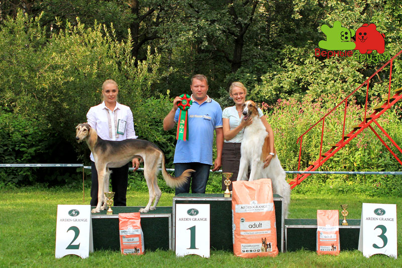
1 место: русская псовая борзая, АКТЕР, вл. Васильева Т.
2 место: салюки, АЛЬ НАФИСЭХ КАРАМ АЛЬ КАЛЕ, вл. Гришунина К.
ЛУЧШИЙ БЭБИ (эксп.Бровкина)
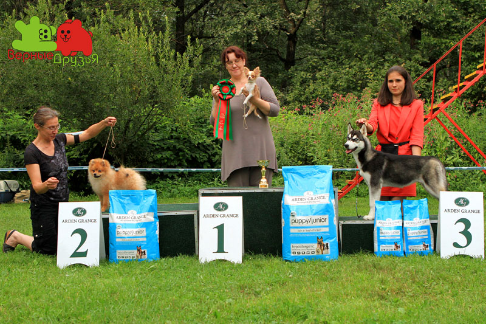
1 место: чихуахуа д/ш, ДОГ ТРИУМФ ВЭРИ СВИТ КИСС, вл. Антипова А.
2 место: немецкий шпиц малый, ЖАВОРОНОК ИЗ ЛАСТОЧКИНОГО ГНЕЗДА, вл. Ласточкина С.
3 место: сибирский хаски, СВОБОДНАЯ СТАЯ ТАЙНА, вл. Жианшина Г.
ЛУЧШИЙ ЩЕНОК (эксп.Бровкина)
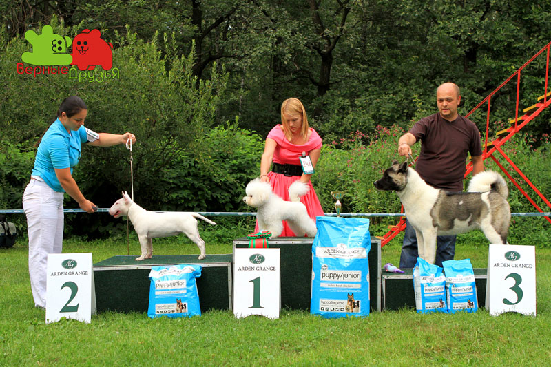
1 место: бишон фризе, FRIZZLED LIFE ZEUS, вл. Осипова М.
2 место: бультерьер миниатюрный, SHEYNE PUNIM BASBUSA AT HUMAN SIGHT, вл. Громова, Гельман
3 место: американская акита, RESTYL-ING BRIGHT CRISTAL, вл. Шаргородский И.
ЛУЧШИЙ ЮНИОР
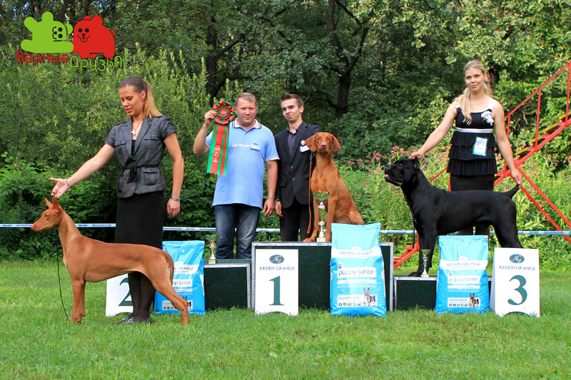
1 место: венгерская короткошерстная легавая, ТИНА ТРЕЙДИНГ ЭЛИОТ, вл. Шелестина Н.
2 место: фараонова собака, РИДЛИ РОАД ИЛЛЮМИНЕЙТЕД, вл. Евтеева М.
3 место: итальянский кане-корсо, LORD DLJA DOMA ALVIK S ESENINSKOGO, вл. Мульцева
КОНКУРС ПИТОМНИКОВ (эксп.Бровкина)
1 место: фараонова собака , "РИДЛИ РОАД", вл. Евтеева М.
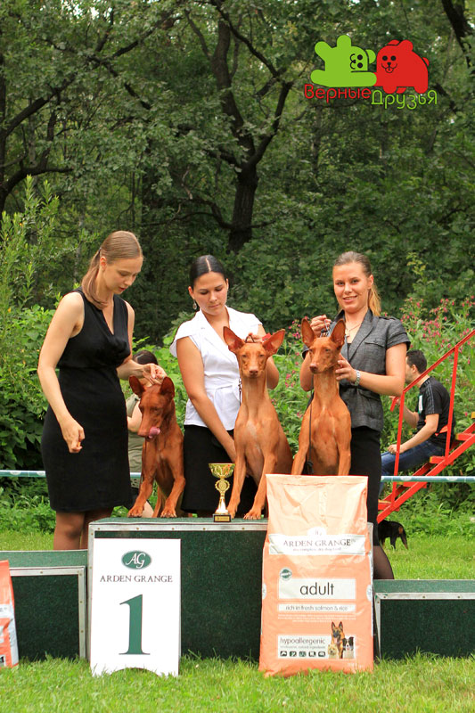
2 место: лабрадор ретривер, "СТРОНГ СТАЙЛ", вл. Ревенко В.
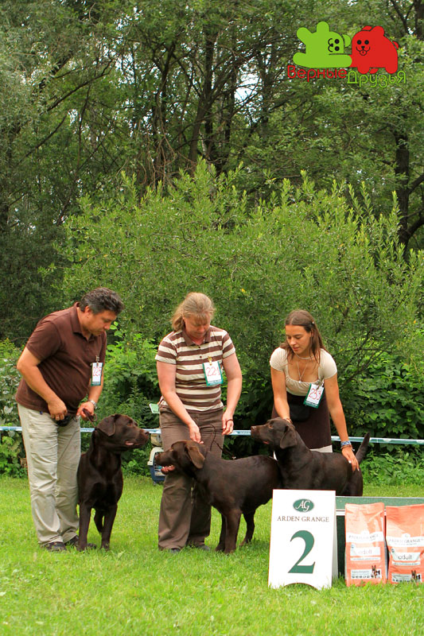
ГОРДОСТЬ ОТЕЧЕСТВА
южнорусская овчарка, PARAMON CRIMEA AK-KAYA, вл. Наумовы
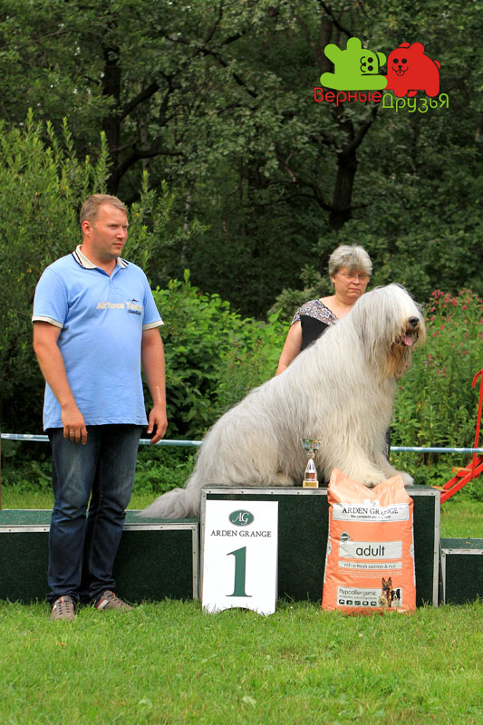